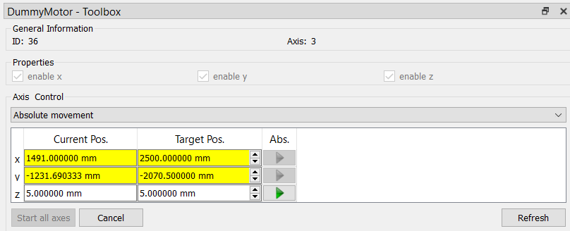

Note
Click here to download the full example code
12.1.10.6.3. DummyMotor¶
This demo shows with the example of the DummyMotor
how grabber and cameras are used in itom.
import time
from itom import actuator
Initialisation of an actuator (e.g: DummyMotor).
stage = actuator("DummyMotor", 3)
# show the toolbox
stage.showToolbox()
# Access the DummyStage with variable-name stage
# Set parameter e.g. speed of the stage to 1000 mm / s
stage.setParam("speed", 1000)
# Get the current speed, should be 1000 mm/s
speed = stage.getParam("speed")
- Synchronous movement:
The script waits until the movement has been finished!
# Set pos of 1. axis (index 0) to the absolute value 10.2 mm
stage.setPosAbs(0, 10.2)
# Read the axis position of 1. axis, should be 10 (mm)
stage.getPos(0)
# Change the position of 1. axis by -6 mm relative to the current position
stage.setPosRel(0, -6)
# Read the axis position of 1. axis, should be 4 (mm)
stage.getPos(0)
# Address n-axis
# Set the position of 1. and 3. axis to 5mm
stage.setPosAbs(0, 5.0, 2, 5.0)
# Read the axis position of 1./3. axis, should be 5 (mm) and 5 (mm)
[x, z] = stage.getPos(0, 2)
print("x = " + str(x) + " z = " + str(z))
# Change the position of 1. axis and 2. by 2 mm relative to the current position
stage.setPosRel(0, 2, 1, 2)
# Read the axis position of 1./2./3. axis, should be 7 (mm), 2 (mm), 5 (mm)
[x, y, z] = stage.getPos(0, 1, 2)
print("x = " + str(x) + " y = " + str(y) + " z = " + str(z))
x = 5.0 z = 5.0
x = 7.0 y = 2.0 z = 5.0
- Asynchronous movement:
The script continuous its executing during the movement. However, the actuator is blocked until the end of the movement, since the script will wait before the next
setParam,setPosAbs,setPosRel,getPos,getParam,getStatusmethods until any previous movement is finished.
# now switch the motor to an asychronous movement
stage.setParam("async", 1)
Control the state of the actuator by the properties:
currentStatus, currentPositions, targetPositions.
# use the currentStatus, currentPositions or targetPositions properties to control the state of the device
targetReached = False
stage.setPosAbs(0, 2500.0, 1, -2070.5)
while not targetReached:
state = stage.currentStatus
if all([s & actuator.actuatorAtTarget for s in state]):
targetReached = True
else:
# print("Current state: %s, current positions: %s" % (state, stage.currentPositions))
time.sleep(0.1)
Control the state of the actuator by connecting to the
actuatorStatusChanged (or targetChanged) signals of the actuator.
Note
The corresponding python methods can only be called if the current script executing is finished. Therefore, this approach is better suited for GUI applications which are mainly based on events.
# use an event-driven approach to control the current status and position:
def statusChanged(state, currentPos):
print(
"motor reported a status changed event. state: %s, current position: %s"
% (str(state), str(currentPos))
)
The method statusChanged can only be called if the script is not executing any more.
Therefore this approach is made for GUI applications
since the actuatorStatusChanged signal might be emitted very often, a minimum timeout of 100ms will
be added to the connection, such that the statusChanged slot is only called after 100ms again. All intermediate
calls are ignored (new in itom 3.2)
stage.connect(
"actuatorStatusChanged(QVector<int>,QVector<double>)", statusChanged, 100,
)
stage.setPosAbs(0, 0.0, 1, 0.0)
The DummyMotor Toolbox dockWidget will appear below the Plugins dockWidget.
{kind=link}
Total running time of the script: ( 0 minutes 2.682 seconds)